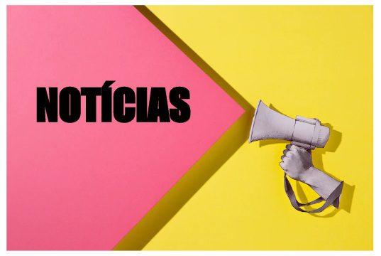
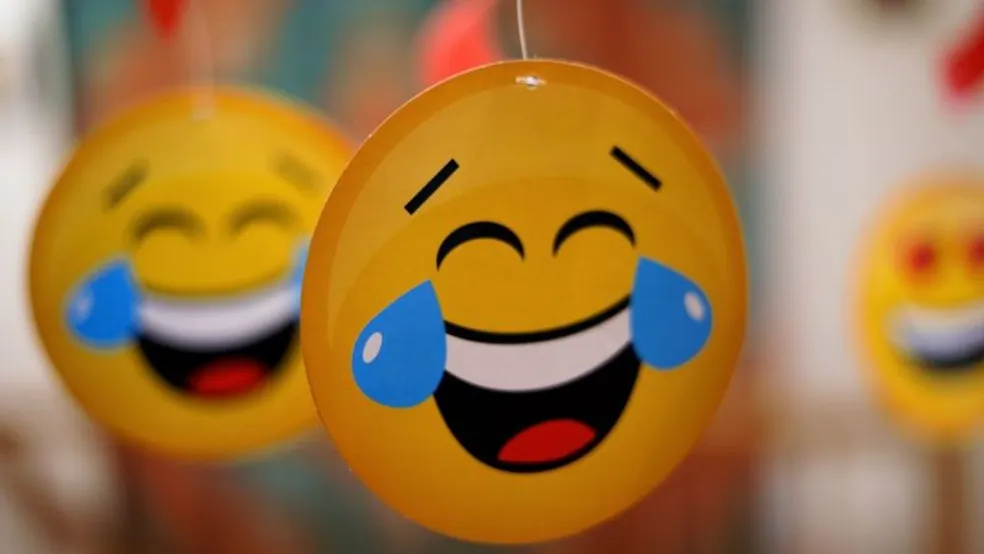

Meus projetos

Meu site: Últimas notícias
Este projeto é uma página de notícias que relatam últimos acontecimentos e relevantes. informando acontecimzentos e a participação do colégio Helena Viana Sundin no campeonato sub 17.

Comédias brasileiras
Este projeto é um a apresentação de comédias que pode divertir toda a família. Sendo os melhores filmes de comédias barsileiras. .

Projeto figma
Este projeto figma apresenta a torcida rubro-negra. E imagens que aquecem o caração da torcida.